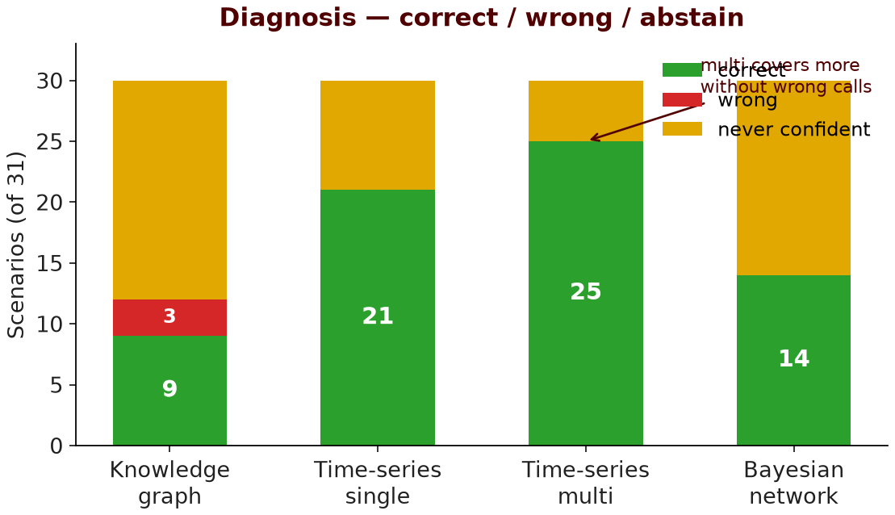
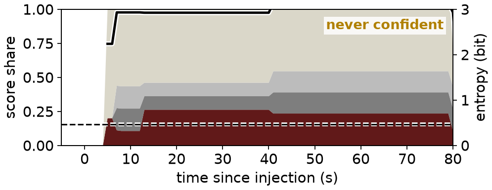
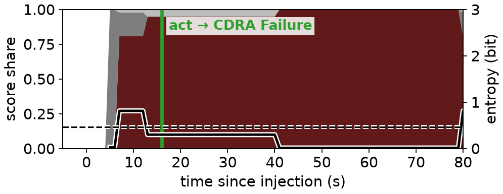
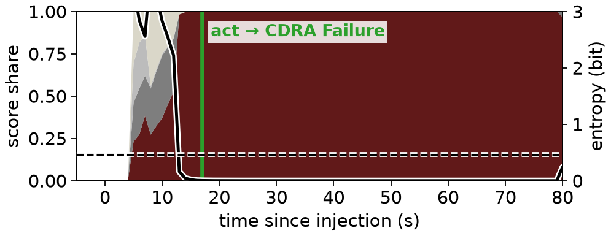
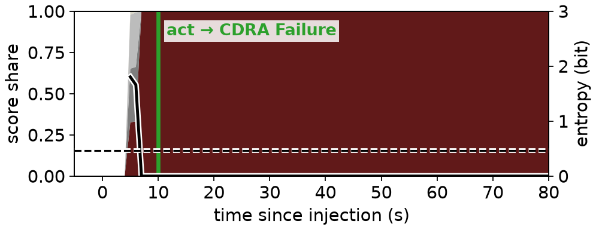

Shared detection & hypotheses · swap evaluation only · gate → correct / wrong / never · Discuss: abstain vs wrong · ▸ backup
| Pipeline | ✓ | ✗ | ∅ | med t |
|---|---|---|---|---|
| Knowledge graph | 9 | 3 | 18 | 19 s |
| TS single | 21 | 0 | 9 | 19 s |
| TS multi | 25 | 0 | 5 | 14 s |
| Bayesian | 14 | 0 | 16 | 21.5 s |




